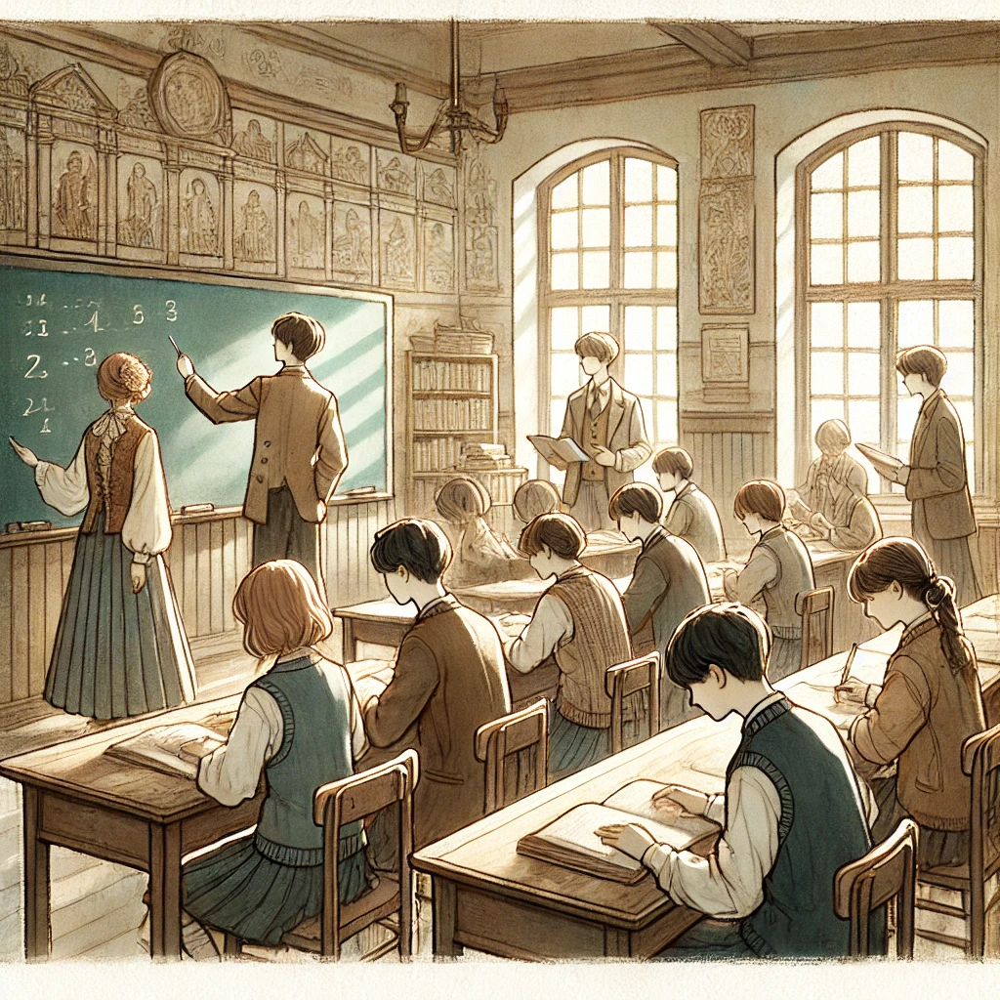

Willems Nicolas-Georges
Bonjour, je m'appelle Willems Nicolas-Georges. Étudiant en développement web à la HEPL, je suis passionné par tout ce qui touche à la création numérique. À travers mes études et mes projets, j’ai appris à concevoir des sites modernes et responsives en utilisant des technologies comme HTML, CSS, et JavaScript. Toujours curieux et motivé, je cherche constamment à améliorer mes compétences et à relever de nouveaux défis.
-
soutien
-
Kanezaka , Japon
-
7 juil . (àge : 21 ans )
Capacités
-
Programation
capaciter dans plusieur language de programatin
-
Gestion de Base de donné
la gestion des donné d'un site web
-
Montage Vidéo
experience dans le montage video et publicitaire
-
Ux designer
L'experience utilisateur au centre des préocupation d'un site web
Mon parcours
nfznfnqinciqsjcoqs,conqskncqsncknqskcnqkscqsqsdcqzkncqsknc
kdksndkfnkjsqnfckjnqskcnqsncknsqkcnkq
sncksqncnsqncksc
lkd,fqsjicnqskcnkjsqncksnkcnksncksnd
-
Mon parcours scolaire
lorempcdcnozdokzodkozkdoakdqkdpa

ednzidnizndizindzid -
Mon experience dans le supérieur
lorempcdcnozdokzodkozkdoakdqkdpa
ednzidnizndizindzid -
Mon vécut dans le monde du travaille
lorempcdcnozdokzodkozkdoakdqkdpa
ednzidnizndizindzid